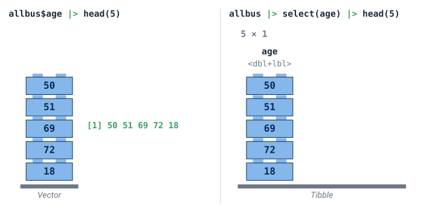
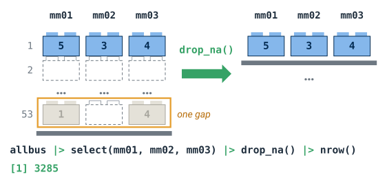

4 Data import and inspection
Who holds Islamophobic attitudes in Germany in 2023?
Before you can answer this question, you need the dataset on your computer, and you need to understand it well enough to pick out the right variables. This chapter takes you from importing the SPSS file through the first inspection steps to handling missing values properly. In Chapter 5 you then build the two scales of the mini study on this basis.
Research journal: Where are you in your mini study? Your tools are set up (Chapters 1–3). Now the actual research work begins. At the end of this chapter you have an analysis dataset: 5246 respondents, your own set of variables, missing values declared. This is the raw state on which all further stages build.
4.1 What this chapter is about
Imagine a colleague gives you a USB stick labelled “ALLBUS 2023, have fun”. You plug it in and open the file. What you see is not what you hoped for: 579 columns with names such as mm01, pa29, pt06, wghtpew. Negative numbers appear where you would expect answers: -8, -9, -11, -42 and a dozen or so more. Some variables are stored as numbers although they are really categories (sex = 1 means “male”). And the actual labels, the wording of what was asked, are hidden somewhere in the background.
This is normal. Secondary datasets in quantitative social research always look like this. They are built so that many people can use them for many different questions, and that only works if the data stay raw at first. Your task is to turn this raw state into an analysis dataset that fits your research question.
Take your time over these steps. They are the methodological core of any honest analysis: Which cases do you exclude? How do you handle missing values? How do you translate mm01 = 7 into “this person strongly rejects Muslims”? Each of these decisions affects the result, and each belongs in a pipeline that you can reproduce at any time, as open science requires.
Everything that follows builds on this chapter. Here you create the analysis dataset that you use to describe distributions in Chapter 7, check structures in Chapter 8 and model hypotheses in Chapter 9. Any error made here affects all later findings.
What you will be able to do after this chapter
- Import an SPSS dataset with
read_spss(), including all variable and value labels. - Search for variables by name or label with
find_var(). - Create detailed codebooks for selected variables with
codebook(). - Select, filter, sort and reorder variables and cases (
select(),filter(),arrange(),relocate()). - Understand the
<haven_labelled>data type and convert it to a factor or a number when needed. - Read, extract and set variable labels and value labels.
- Declare missing values and handle them systematically with
na_frequencies(),set_na()anddrop_na().
4.2 Setup
In every R session, you first load the packages you work with. Throughout this book there are only two:
SPSS → R: Loading packages. In SPSS, all functions are available straight away. In R, you use library() to activate the tools you need. This keeps the set of function names manageable and makes each step traceable.
4.3 Importing the dataset with read_spss()
The 2023 German General Social Survey (ALLBUS) is stored in your project folder as an SPSS file (ALLBUS2023.sav). You import it with read_spss() from mariposa. The English edition of the dataset stores the codes for missing values (“no answer”, “don’t know”, “not applicable” and others) as ordinary numbers, so you declare them as missing when you read the file. set_na() without a variable name applies the codes to all numeric variables; Section 4.8 explains set_na().
allbus is now a tibble, a modern data type in the tidyverse. Tibbles behave like classic data frames, but they print more compactly and keep their column types more reliably. This is what you have loaded:
allbus# A tibble: 5,246 × 579
za_nr doi version respid substudy mode splt23_1 splt23_2
<dbl+lbl> <chr> <chr> <dbl> <dbl+lbl> <dbl+l> <dbl+lbl> <dbl+lbl>
1 8833 [ALLBU… http… v1.0.0… 1 NA(k) [NAP… 2 [CAP… NA(k) [NAP… 2 [SPL…
2 8833 [ALLBU… http… v1.0.0… 2 1 [CON… 3 [CAW… 1 [SPL… NA(k) [NAP…
3 8833 [ALLBU… http… v1.0.0… 3 1 [CON… 4 [MAI… 1 [SPL… NA(k) [NAP…
4 8833 [ALLBU… http… v1.0.0… 4 1 [CON… 4 [MAI… 1 [SPL… NA(k) [NAP…
5 8833 [ALLBU… http… v1.0.0… 5 2 [SEQ… 3 [CAW… 2 [SPL… NA(k) [NAP…
6 8833 [ALLBU… http… v1.0.0… 6 NA(k) [NAP… 2 [CAP… NA(k) [NAP… 1 [SPL…
7 8833 [ALLBU… http… v1.0.0… 7 1 [CON… 4 [MAI… 1 [SPL… NA(k) [NAP…
8 8833 [ALLBU… http… v1.0.0… 8 1 [CON… 3 [CAW… 1 [SPL… NA(k) [NAP…
9 8833 [ALLBU… http… v1.0.0… 9 2 [SEQ… 3 [CAW… 2 [SPL… NA(k) [NAP…
10 8833 [ALLBU… http… v1.0.0… 10 NA(k) [NAP… 2 [CAP… NA(k) [NAP… 2 [SPL…
# ℹ 5,236 more rows
# ℹ 571 more variables: eastwest <dbl+lbl>, german <dbl+lbl>, ep01 <dbl+lbl>,
# ep03 <dbl+lbl>, ep04 <dbl+lbl>, ep06 <dbl+lbl>, xr19 <dbl+lbl>,
# xr20 <dbl+lbl>, lm27 <dbl+lbl>, lm28 <dbl+lbl>, lm29 <dbl+lbl>,
# lm30 <dbl+lbl>, lm31 <dbl+lbl>, lm32 <dbl+lbl>, lm33 <dbl+lbl>,
# lm34 <dbl+lbl>, la01 <dbl+lbl>, li01 <dbl+lbl>, li02 <dbl+lbl>,
# li03 <dbl+lbl>, li04 <dbl+lbl>, li05 <dbl+lbl>, li09 <dbl+lbl>, …The header shows 5,246 × 579: the dataset has 5246 cases and 579 variables. Below it you see a selection of the first columns with their data types.
Figure 4.1 shows the path from the file to the object: read_spss() reads ALLBUS2023.sav from the project folder, and the result is stored under the name allbus. From now on you work with this object in R; the file on your hard drive stays unchanged.

read_spss() reads the SPSS file, set_na() turns the missing-value codes into NA, and the result is stored as the object allbus.
What do the small type markers under each column mean? Directly below each column name, the tibble prints a type tag in angle brackets. Here is a short glossary:
| Tag | Meaning | Example |
|---|---|---|
<int> |
whole number (integer) | case ID, count |
<dbl> |
decimal number (double) | age, scale mean |
<chr> |
text (character) | variable with text responses |
<fct> |
factor (category with levels) | recoded education levels |
<dbl+lbl> |
labelled double from SPSS | typical ALLBUS variable |
<lgl> |
logical (TRUE/FALSE) |
result of a condition |
You will see the <dbl+lbl> type everywhere in ALLBUS. It is created when you import the file. In the background, read_spss() uses the haven package and adds two properties you know from SPSS: variable labels (a descriptive label for each column) and value labels (a label for each value). Both are stored in the columns without being visible; you can retrieve them at any time or make them visible as a factor.
Most variables therefore arrive as <haven_labelled> columns, printed as <dbl+lbl>. Such a column is not a factor. The values stay numeric, so you can still calculate with them, and in the background they keep their SPSS value labels (“1 = MALE, 2 = FEMALE, …”). For example:
allbus$sex |> head(5)<labelled<double>[5]>: RESPONDENT: SEX
[1] 1 1 2 1 2
Labels:
value label
1 MALE
2 FEMALE
3 NON-BINARY
NA(g) DATA ERROR: MR
NA(n) NO ANSWERAt the top are the variable label and the first five values, below them the table of labels. The rows NA(g) and NA(n) are the variable’s missing codes. More on these in Section 4.8.
Three operations are common:
- Calculate with the variable (
mean(allbus$sex, na.rm = TRUE)) → works directly, but usually gives meaningless values for categorical variables. - Make it readable for plots (
allbus |> to_label(sex)) → converts it into a factor with the labels as levels. - Keep the plain number (
allbus |> to_numeric(sex)) → removes the label layer.
The details follow in Section 4.6.
4.3.1 Other formats and export with read_stata(), read_xlsx() and write_spss()
If you need data in other formats, there are matching functions:
read_stata("file.dta") # Stata
read_sas("file.sas7bdat") # SAS
read_xlsx("file.xlsx") # ExcelAnd if you want to export an edited dataset back to SPSS:
write_spss(allbus, "allbus_edited.sav")
4.4 A first look at the dataset with glimpse(), nrow() and ncol()
With almost 600 variables, you cannot display everything in the console. Three tools help you find your way around:
nrow() returns 5246 and ncol() returns 579. So allbus is a baseplate with 5246 rows and 579 towers (Figure 4.2): each row is a respondent, each tower a variable. An empty brick means that there is no valid value for this person on this variable.

allbus: the first five rows of the variables respid, age and mm01. For mm01, the value is missing in three rows.
4.4.1 Finding variables with find_var()
The variable names in ALLBUS are cryptic (mm01, pa29, wghtpew). What is actually measured is given in the variable label. mariposa’s find_var() searches both at the same time, name and label, and returns the matches as a small table:
allbus |> find_var("muslim") col name label
1 169 ma08 RELIG.INSTRUCTION FOR MUSLIMS IN SCHOOLS
2 192 mm01 EXERCISE OF MUSLIM FAITH SHLD BE LIMITED
3 194 mm03 PRESENCE OF MUSLIMS LEADS TO CONFLICTS
4 195 mm04 STATE SHLD MONITOR MUSLIM COMMUNITIES
5 196 mm05 RESP. WOULD NOT OBJECT TO MUSLIM MAYOR
6 197 mm06 THERE ARE MANY FANATICS AMONG MUSLIMSFor each match, the table shows the position of the variable in the dataset (col), its name and the full label; the search is not case-sensitive. There are six matches: five of the six items of our scale and ma08. The item mm02 refers to “Islam” rather than “Muslims”. Because the search pattern is a regular expression, you can search for both terms at once; | means “or”:
allbus |> find_var("islam|muslim") col name label
1 169 ma08 RELIG.INSTRUCTION FOR MUSLIMS IN SCHOOLS
2 192 mm01 EXERCISE OF MUSLIM FAITH SHLD BE LIMITED
3 193 mm02 ISLAM FITS IN WITH GERMAN SOCIETY
4 194 mm03 PRESENCE OF MUSLIMS LEADS TO CONFLICTS
5 195 mm04 STATE SHLD MONITOR MUSLIM COMMUNITIES
6 196 mm05 RESP. WOULD NOT OBJECT TO MUSLIM MAYOR
7 197 mm06 THERE ARE MANY FANATICS AMONG MUSLIMSNow all six mm items for our Islamophobia scale are together (plus ma08, an item on religious instruction for Muslims in schools from a different question block). If, on the other hand, you are searching literally for characters that have a special meaning in regular expressions (such as the full stop in RELIG.), set fixed = TRUE. By default, find_var() searches names and labels; with search = "label" you restrict the search to labels, with search = "name" to names:
allbus |> find_var("age", search = "label") col name label
1 56 vi10 IMPORTANCE: POLITICAL ENGAGEMENT
2 93 age RESPONDENT: AGE
3 94 agec RESPONDENT: AGE, CATEGORIZED
4 114 mp05 FOREIGN: HELP TO SECURE OLD AGE PENSIONS
5 227 pe08 AVERAGE CITIZEN LITTLE POL.UNDERSTANDING
6 311 dw12a RESP.: AGE WHEN R. STOPPED WORKING
7 333 scage SPOUSE: AGE
8 334 scagec PRESENT SPOUSE: AGE, CATEGORIZED
9 367 page PARTNER: AGE
10 368 pagec PARTNER: AGE, CATEGORIZED
11 400 df44 RESP.: LIVING WITH PARENTS AT AGE 15?
12 434 hh2age 2.PERSON IN HOUSEHOLD: AGE
13 439 hh3age 3.PERSON IN HOUSEHOLD: AGE
14 444 hh4age 4.PERSON IN HOUSEHOLD: AGE
15 449 hh5age 5.PERSON IN HOUSEHOLD: AGE
16 454 hh6age 6.PERSON IN HOUSEHOLD: AGE
17 459 hh7age 7.PERSON IN HOUSEHOLD: AGE
18 464 hh8age 8.PERSON IN HOUSEHOLD: AGE
19 471 dh17 AGE OF YOUNGEST HH-MEMBER
20 480 kh1age CHILD 1 NOT IN HH: AGE
21 483 kh2age CHILD 2 NOT IN HH: AGE
22 486 kh3age CHILD 3 NOT IN HH: AGE
23 489 kh4age CHILD 4 NOT IN HH: AGE
24 492 kh5age CHILD 5 NOT IN HH: AGE
25 495 kh6age CHILD 6 NOT IN HH: AGE
26 498 kh7age CHILD 7 NOT IN HH: AGE
27 501 kh8age CHILD 8 NOT IN HH: AGE
28 504 kh9age CHILD 9 NOT IN HH: AGE
29 507 kh10age CHILD 10 NOT IN HH: AGE
30 522 pr04 REUNIFICATION MORE ADVANTAGES FOR WEST
31 523 pr05 REUNIFICATION MORE ADVANTAGES FOR EAST
32 573 xi03 INTERVIEWER: AGEallbus |> find_var("^mm", search = "name") # regex: all mm items col name label
1 170 mm07 DO YOU SUPPORT THE BUILDING OF MOSQUES?
2 192 mm01 EXERCISE OF MUSLIM FAITH SHLD BE LIMITED
3 193 mm02 ISLAM FITS IN WITH GERMAN SOCIETY
4 194 mm03 PRESENCE OF MUSLIMS LEADS TO CONFLICTS
5 195 mm04 STATE SHLD MONITOR MUSLIM COMMUNITIES
6 196 mm05 RESP. WOULD NOT OBJECT TO MUSLIM MAYOR
7 197 mm06 THERE ARE MANY FANATICS AMONG MUSLIMS
4.4.2 Detailed overview with codebook()
For a specific selection of variables, codebook() from mariposa produces an HTML overview with labels, values and frequencies. It is the R equivalent of DISPLAY DICTIONARY in SPSS:
allbus |>
codebook(mm01, mm02, mm03, mm04, mm05, mm06)5246 observations | 6 variables | 6 labelled | 6 with missing data
| ID | Name | Type | Label | Values | Value Labels | Freq. |
|---|---|---|---|---|---|---|
| 192 | mm01 | lbl+dbl | EXERCISE OF MUSLIM FAITH SHLD BE LIMITED |
1
2
3
4
5
6
7
-42
-11
-9
-8
|
COMPLETELY DISAGREE
..
..
..
..
..
COMPLETELY AGREE
DATA ERROR: MR
NAP: SPLIT
NO ANSWER
DO NOT KNOW
|
1022
457
295
529
319
236
543
2
1647
73
123
|
| 193 | mm02 | lbl+dbl | ISLAM FITS IN WITH GERMAN SOCIETY |
1
2
3
4
5
6
7
-42
-11
-9
-8
|
COMPLETELY DISAGREE
..
..
..
..
..
COMPLETELY AGREE
DATA ERROR: MR
NAP: SPLIT
NO ANSWER
DO NOT KNOW
|
954
515
494
629
350
235
227
2
1647
72
121
|
| 194 | mm03 | lbl+dbl | PRESENCE OF MUSLIMS LEADS TO CONFLICTS |
1
2
3
4
5
6
7
-42
-11
-9
-8
|
COMPLETELY DISAGREE
..
..
..
..
..
COMPLETELY AGREE
DATA ERROR: MR
NAP: SPLIT
NO ANSWER
DO NOT KNOW
|
381
434
391
700
574
411
552
2
1647
60
94
|
| 195 | mm04 | lbl+dbl | STATE SHLD MONITOR MUSLIM COMMUNITIES |
1
2
3
4
5
6
7
-42
-11
-9
-8
|
COMPLETELY DISAGREE
..
..
..
..
..
COMPLETELY AGREE
DATA ERROR: MR
NAP: SPLIT
NO ANSWER
DO NOT KNOW
|
533
473
338
596
437
397
650
4
1647
64
107
|
| 196 | mm05 | lbl+dbl | RESP. WOULD NOT OBJECT TO MUSLIM MAYOR |
1
2
3
4
5
6
7
-11
-9
-8
|
COMPLETELY DISAGREE
..
..
..
..
..
COMPLETELY AGREE
NAP: SPLIT
NO ANSWER
DO NOT KNOW
|
819
271
221
453
334
443
868
1647
72
118
|
| 197 | mm06 | lbl+dbl | THERE ARE MANY FANATICS AMONG MUSLIMS |
1
2
3
4
5
6
7
-11
-9
-8
|
COMPLETELY DISAGREE
..
..
..
..
..
COMPLETELY AGREE
NAP: SPLIT
NO ANSWER
DO NOT KNOW
|
328
509
369
561
475
381
686
1647
102
188
|
In RStudio, the overview opens in the Viewer tab; in a Quarto document such as this book, mariposa embeds it directly in the report. To pass it on, save it as a separate HTML file with codebook(..., file = "codebook.html") or as an Excel spreadsheet with write_xlsx(codebook(...), "codebook.xlsx").
In a methods section, each scale needs a short codebook: item wording, response format, treatment of missing values, N per item. If you create this codebook with codebook() and put it in the appendix of your report, you meet this requirement.
SPSS → R: Inspecting data. In SPSS, you use DISPLAY DICTIONARY for a complete overview. find_var() is more targeted: you search for a keyword and immediately get the matching variables, even if you do not remember the cryptic names.
| SPSS | R |
|---|---|
FREQUENCIES VARIABLES=mm01. |
allbus |> frequency(mm01) |
DESCRIPTIVES VARIABLES=age. |
allbus |> describe(age) |
DISPLAY DICTIONARY. |
allbus |> codebook(...) |
4.5 Selecting variables and cases
The dplyr functions select(), filter() and arrange() are the tools you use every day to take what you need from a large dataset.
4.5.1 Selecting variables with select()
allbus |>
select(mm01, mm02, mm03)# A tibble: 5,246 × 3
mm01 mm02 mm03
<dbl+lbl> <dbl+lbl> <dbl+lbl>
1 5 [..] 3 [..] 4 [..]
2 NA(l) [NAP: SPLIT] NA(l) [NAP: SPLIT] NA(l) [NAP: SPLIT]
3 NA(l) [NAP: SPLIT] NA(l) [NAP: SPLIT] NA(l) [NAP: SPLIT]
4 NA(l) [NAP: SPLIT] NA(l) [NAP: SPLIT] NA(l) [NAP: SPLIT]
5 2 [..] 4 [..] 4 [..]
6 3 [..] 3 [..] 3 [..]
7 NA(l) [NAP: SPLIT] NA(l) [NAP: SPLIT] NA(l) [NAP: SPLIT]
8 NA(l) [NAP: SPLIT] NA(l) [NAP: SPLIT] NA(l) [NAP: SPLIT]
9 1 [COMPLETELY DISAGREE] 6 [..] 2 [..]
10 7 [COMPLETELY AGREE] 1 [COMPLETELY DISAGREE] 3 [..]
# ℹ 5,236 more rowsselect() keeps only the towers you name; all 5246 rows stay on the baseplate (Figure 4.3).

select(mm01, mm02, mm03) keeps three towers. The towers that are dropped are grey; the number of rows stays at 5246.
You can specify ranges with : and exclude variables with -:
allbus |>
select(mm01:mm06, eastwest, sex, age, educ)# A tibble: 5,246 × 10
mm01 mm02 mm03 mm04 mm05 mm06
<dbl+lbl> <dbl+lbl> <dbl+lbl> <dbl+lbl> <dbl+lbl> <dbl+lbl>
1 5 [..] 3 [..] 4 [..] 2 [..] 6 [..] 2 [..]
2 NA(l) [NAP: SPLI… NA(l) [NAP… NA(l) [NAP… NA(l) [NAP… NA(l) [NAP… NA(l) [NAP…
3 NA(l) [NAP: SPLI… NA(l) [NAP… NA(l) [NAP… NA(l) [NAP… NA(l) [NAP… NA(l) [NAP…
4 NA(l) [NAP: SPLI… NA(l) [NAP… NA(l) [NAP… NA(l) [NAP… NA(l) [NAP… NA(l) [NAP…
5 2 [..] 4 [..] 4 [..] 3 [..] 3 [..] 6 [..]
6 3 [..] 3 [..] 3 [..] 7 [COM… 6 [..] 3 [..]
7 NA(l) [NAP: SPLI… NA(l) [NAP… NA(l) [NAP… NA(l) [NAP… NA(l) [NAP… NA(l) [NAP…
8 NA(l) [NAP: SPLI… NA(l) [NAP… NA(l) [NAP… NA(l) [NAP… NA(l) [NAP… NA(l) [NAP…
9 1 [COMPLETEL… 6 [..] 2 [..] 1 [COM… 7 [COM… 2 [..]
10 7 [COMPLETEL… 1 [COM… 3 [..] 6 [..] 1 [COM… 7 [COM…
# ℹ 5,236 more rows
# ℹ 4 more variables: eastwest <dbl+lbl>, sex <dbl+lbl>, age <dbl+lbl>,
# educ <dbl+lbl>This selection, the six scale items plus demographics, is what you need for the mini study.
In Section 3.5 you extracted a single column with $. You can also do this with select(), but you get a different object back:
allbus$age |> head(5)<labelled<double>[5]>: RESPONDENT: AGE
[1] 50 51 69 72 18
Labels:
value label
NA(j) CANNOT BE GENERATED# A tibble: 5 × 1
age
<dbl+lbl>
1 50
2 51
3 69
4 72
5 18 allbus$age returns a vector: the five numbers after [1], with the table of labels below. allbus |> select(age) returns a tibble with one column. On the left, Figure 4.4 shows a single tower, on the right a baseplate with one tower. Which form you need depends on the next function: functions that calculate, such as mean(), expect a vector; dplyr functions such as filter() expect a dataset.
![ head(5), below it a tower of five blue bricks 50, 51, 69, 72 and 18 on a short base, labelled Vector, next to it the output [1] 50 51 69 72 18. On the right the code allbus |> select(age) |> head(5), below it the dimensions 5 × 1 and the same tower with the column header age and the type dbl+lbl on a wide baseplate with room for further towers, labelled Tibble.">](Bilder/figuren/en/k04-dollar-select.svg){kind=link}
$ returns the values of age as a vector; on the right, select() returns a tibble with the column age. Both contain the same five values.
Stop and think. What does allbus |> select(age) |> mean(na.rm = TRUE) return?
Warning in mean.default(select(allbus, age), na.rm = TRUE): argument is not
numeric or logical: returning NA[1] NAmean(allbus$age, na.rm = TRUE)[1] 52.51063In the first call, mean() receives a baseplate instead of a tower. It cannot calculate with that: R issues a warning and returns NA. In the second call, mean() receives the tower allbus$age and calculates the mean age, about 52.5 years. In a pipe, you take the tower out with pull(age).
4.5.1.1 Tidyselect helpers such as starts_with(), where() and everything()
With large datasets such as ALLBUS, you often want to select all variables that match a pattern. Instead of listing them one by one, you can use the following functions:
| Helper | Effect | Example with ALLBUS |
|---|---|---|
starts_with("pre") |
all variables whose name starts with pre
|
select(starts_with("mm0")) |
ends_with("suffix") |
all variables whose name ends with suffix
|
select(ends_with("educ")): school-leaving certificate of respondent, partner and parents |
contains("part") |
all variables whose name contains part
|
select(contains("wght")): the four weighting variables |
matches("regex") |
all variables that match the regular expression | select(matches("^p[at]")) |
where(is.numeric) |
all variables whose content meets a condition | select(where(is.numeric)) |
everything() |
all remaining variables, typically in relocate()
|
relocate(respid, .before = everything()) |
These helpers work in the same way in mutate(across(...)), summarise(across(...)) and in many mariposa functions. They are part of a vocabulary shared across the tidyverse.
4.5.1.2 Extracting and reordering columns with pull() and relocate()
Two close relatives of select():
-
pull(var)extracts a single column as a plain vector. This is useful when you want to pass the content of the column directly to a function that does not expect a tibble:allbus |> pull(age) |> mean(na.rm = TRUE). -
relocate(var, .before = X, .after = Y)reorders columns without removing any. This is handy when you want the most important variables at the front:allbus |> relocate(mm01:mm06, eastwest, sex, age, educ, .before = everything()).
4.5.2 Filtering cases with filter()
# A tibble: 2,672 × 3
sex age educ
<dbl+lbl> <dbl+lbl> <dbl+lbl>
1 2 [FEMALE] 69 4 [QUALI.UNIV.APPL.SCI.]
2 2 [FEMALE] 18 5 [QUALI.FOR UNIVERSITY]
3 2 [FEMALE] 45 5 [QUALI.FOR UNIVERSITY]
4 2 [FEMALE] 26 3 [INTERMEDIARY LEVEL]
5 2 [FEMALE] 71 2 [LOWEST LEVEL]
6 2 [FEMALE] 66 2 [LOWEST LEVEL]
7 2 [FEMALE] 39 3 [INTERMEDIARY LEVEL]
8 2 [FEMALE] 51 3 [INTERMEDIARY LEVEL]
9 2 [FEMALE] 29 5 [QUALI.FOR UNIVERSITY]
10 2 [FEMALE] 60 4 [QUALI.UNIV.APPL.SCI.]
# ℹ 2,662 more rowsfilter() checks the condition sex == 2 for each row and keeps only the rows in which it is true. Code 2 stands for FEMALE; 2672 respondents remain (Figure 4.5). select() then keeps the three columns.

filter(sex == 2) keeps only the rows with code 2 (FEMALE). The rows that are dropped are grey; the first six rows are shown.
The comparison and logical operators from Section 3.4 (==, !=, <, >, &, |, %in%) are your vocabulary here. You can combine them freely into more complex filters:
[1] 825Caution: Missing values. filter() automatically excludes cases with NA in the condition. This is usually what you want, but it can take you by surprise. Compare three variants:
sex == 1 compares each row separately (Figure 4.6). In row 110, sex is missing (NO ANSWER). R cannot tell whether this value is 1, so the comparison also gives NA. filter() keeps only the rows with TRUE, so row 110 is dropped in the same way as the row with FALSE. is.na(sex) only asks whether the value is missing, and it always gives TRUE or FALSE.

filter(sex == 1) keeps only the rows in which the comparison gives TRUE. Where sex is missing, the result of the comparison is also an empty brick, and the row is dropped.
If your number of cases is suddenly smaller than you expected, the NA filtering is usually the reason.
Stop and think. allbus |> filter(sex == 1) keeps 2546 rows, filter(sex == 2) keeps 2672 (Figure 4.5). Together that makes 5218, but allbus has 5246 rows. Where are the other 28?
allbus |> frequency(sex)
Frequency Analysis Results
--------------------------
sex (RESPONDENT: SEX)
# total N=5246 valid N=5236 mean=1.52 sd=0.51 skewness=0.01
+-------+----------------+------+--------+---------+--------+
| Value | Label | N | Raw % | Valid % | Cum. % |
+-------+----------------+------+--------+---------+--------+
| 1 | MALE | 2546 | 48.53 | 48.62 | 48.62 |
| 2 | FEMALE | 2672 | 50.93 | 51.03 | 99.66 |
| 3 | NON-BINARY | 18 | 0.34 | 0.34 | 100.00 |
+-------+----------------+------+--------+---------+--------+
| Total valid | 5236 | 99.81 | 100.00 | |
+-------+----------------+------+--------+---------+--------+
| -42 | DATA ERROR: MR | 1 | 0.02 | | |
| -9 | NO ANSWER | 9 | 0.17 | | |
+-------+----------------+------+--------+---------+--------+
| Total missing | 10 | 0.19 | | |
+-------+----------------+------+--------+---------+--------+
| Total | 5246 | 100.00 | | |
+-------+----------------+------+--------+---------+--------+Eighteen respondents have code 3 (NON-BINARY) on sex; neither sex == 1 nor sex == 2 includes them. For the other 10, the value is missing (NO ANSWER nine times, DATA ERROR: MR once), and these rows are dropped by every comparison with ==. filter(is.na(sex)) gives you exactly these 10 rows.
4.5.3 Sorting cases with arrange() and desc()
# A tibble: 5 × 2
age educ
<dbl+lbl> <dbl+lbl>
1 18 5 [QUALI.FOR UNIVERSITY]
2 18 5 [QUALI.FOR UNIVERSITY]
3 18 3 [INTERMEDIARY LEVEL]
4 18 1 [NO CERTIFICATE]
5 18 2 [LOWEST LEVEL] In descending order with desc():
4.6 Understanding data types with class()
When you work in SPSS, you rarely ask yourself which type a variable is. SPSS handles this in the background: a variable is “numeric” or “string”, and value labels (“1 = male, 2 = female”) are just a layer of labels on top. In R, this works a little differently, which can be confusing at first.
R has a number of data types: plain numbers (numeric), text (character), logical values (logical) and categories with a fixed order (factor). When you import an SPSS dataset, there is one more type, which mariposa adopts from the haven package: <haven_labelled>. It is a kind of hybrid: the column behaves like a number, but in the background the values keep their SPSS value labels. This way the information “1 means male” is kept, and you do not have to look it up in the codebook.
class() shows you the type of a variable:
class(allbus$sex)[1] "haven_labelled" "vctrs_vctr" "double" class(allbus$age)[1] "haven_labelled" "vctrs_vctr" "double" Both variables are double, that is, numbers, and at the same time haven_labelled. So a value of sex is a brick with a sticker, for example the number 1 with the value label MALE (Figure 4.7). The tibble shows this as the type tag <dbl+lbl>. For age, only the missing code has a label; that is enough to make the variable labelled.

sex: the number 1 with the sticker MALE. dbl stands for the number (double), lbl for the value label (haven_labelled).
4.6.1 Converting labelled variables with to_label(), to_numeric() and unlabel()
You will need three conversions again and again:
| Function | Effect |
|---|---|
to_label(data, var) |
converts <haven_labelled> into a factor with the value labels as levels; the usual choice when you want readable labels on ggplot() axes |
to_numeric(data, var) |
converts into a plain numeric vector; the labels are lost |
to_labelled(data, var, labels = ...) |
converts a factor back into a <haven_labelled>
|
# A tibble: 3 × 2
sex eastwest
<fct> <fct>
1 MALE OLD FEDERAL STATES
2 MALE OLD FEDERAL STATES
3 FEMALE OLD FEDERAL STATESto_label() turns the sticker into the value: the 1 with the label MALE becomes the factor level MALE (Figure 4.8). to_numeric() peels off the sticker and leaves the number 1.

sex before and after conversion. to_label() gives a factor with the labels as values, to_numeric() gives the numbers without labels.
If you only want to strip off the labels (for example because a function cannot handle labelled vectors), use unlabel(): allbus |> unlabel(sex, age). You will rarely need it, but it is useful when another package will not accept labelled vectors.
In SPSS, variables are either numeric or string. Value labels are an add-on. In R, factors (categories) and numeric vectors are separate types. <haven_labelled> is a bridge: you work with numbers, but the value labels travel with them. When to convert:
-
to_label()when you sort, group, cross-tabulate or plot; factors give readable output. -
to_numeric()when you calculate or build scales, for example with Likert items that you treat as quasi-interval. - Keep the original if the variable is not final yet and you will need the labels later.
4.7 Reading and setting variable and value labels with var_label() and val_labels()
| Function | Effect |
|---|---|
var_label(data) |
read variable labels |
var_label(data$var) <- "New label" |
set the variable label of one column |
var_label(data) <- list(var = "New label") |
set the variable labels of several columns at once |
val_labels(data) |
read value labels |
data <- val_labels(data, var = c("value label 1" = 1, "value label 2" = 2)) |
set value labels |
data <- val_labels(data, var = c("value label 1" = 1), .add = TRUE) |
change or add individual value labels and keep the others |
drop_labels(data) |
remove all value labels whose value does not occur in the data |
mm01
"EXERCISE OF MUSLIM FAITH SHLD BE LIMITED"
mm02
"ISLAM FITS IN WITH GERMAN SOCIETY"
mm03
"PRESENCE OF MUSLIMS LEADS TO CONFLICTS" The result is a named character vector with the stored label for each variable. This tells you what a cryptic variable such as mm01 means, so you do not have to look it up in the codebook.
A variable such as mm01 carries three labels (Figure 4.9): the variable name you work with in R, the variable label that var_label() reads, and the value labels that say what a number means. For mm01, only the end points 1 and 7 have a value label; for 2 to 6, val_labels() shows only ...

mm01: variable name, variable label and value labels. The value labels are stuck to the bricks as stickers.
When you create a new variable (for example a scale in Chapter 5), you can give it a descriptive label afterwards:
var_label(allbus$islamophobia) <- "Islamophobia scale (6 items, 1–7)"This label then appears automatically in codebook(), in the header of frequency() and in many summary() outputs, wherever mariposa looks for labels. For several variables at once, you pass a list: var_label(allbus) <- list(islamophobia = "…", populism = "…").
Value labels are not set with an arrow on the column. val_labels() takes pairs of a variable and a named vector ("Label" = code) and returns the changed dataset, which you assign back to allbus. A typical case: a 0/1 dummy you have built yourself, such as islamophobia_high in Chapter 9, should show readable values in frequency() and crosstab() instead of bare zeros and ones:
allbus <- val_labels(allbus, islamophobia_high = c("low" = 0, "high" = 1))Caution: val_labels() replaces existing labels. By default, val_labels() discards all existing value labels of the variable. For a newly built variable this does not matter. For an ALLBUS variable, however, the labels of the missing codes disappear as well: after val_labels(allbus, mm01 = c("completely disagree" = 1, "completely agree" = 7)), frequency(mm01) no longer shows NAP: SPLIT next to -11. If you only want to change or add individual labels, set .add = TRUE. All other labels are then kept:
allbus <- val_labels(allbus, mm01 = c("completely disagree" = 1, "completely agree" = 7), .add = TRUE)val_labels(allbus, mm01 = NULL) removes all value labels of a variable.
4.8 Declaring missing values with na_frequencies(), set_na() and drop_na()
Missing values are normal in social research. Nobody answers every question in a survey: some people skip individual items, some simply do not know, and some are never asked certain questions because of a split design. And some answers were there originally but were lost through a data error.
GESIS therefore distinguishes many kinds of missing values in ALLBUS and codes them with distinct negative numbers. ALLBUS 2023 has 17 different codes. Four of them occur in the six items of our Islamophobia scale (mm01 to mm06):
| Code | Meaning |
|---|---|
-42 |
DATA ERROR: MR (multiple responses) |
-11 |
NAP: SPLIT (not applicable / split module) |
-9 |
NO ANSWER |
-8 |
DO NOT KNOW |
Other variables have further codes, such as -10 NAP: SCREENED OUT (question skipped after a filter question), -15 NAP: MODE (not asked in this survey mode), -7 REFUSED, -32 CANNOT BE GENERATED (for age) or -33 CANNOT BE CODED and -41 DATA ERROR (for the school-leaving certificate, educ). na_frequencies() (see below) shows you which codes a particular variable has.
The distinction matters substantively. A “don’t know” is methodologically different from a refused answer, and a “not applicable” (the person was never asked the question) is different again from a genuine data error. If you treat these codes as ordinary numbers, which is what happens when you simply include them in a mean, your results are worthless: an “average” life satisfaction of -3.4 is obviously nonsense.
After the import step, these codes are stored in allbus as tagged NAs. “Tagged” means that they count as NA (missing) in calculations, but in the background they keep the information about which type of missing value they are. So you can still tell them apart later, for example to show how many people chose “don’t know”.
In ALLBUS, some item batteries are put to only part of the sample (split design); respondents who are not shown them get the code -11 (NAP: SPLIT). This applies in particular to the mm items of our Islamophobia scale: about 1650 respondents, just under a third, did not see them. The valid N per item is therefore about 3300–3450 rather than 5246. This is intended and belongs in the methods section.
na_frequencies() shows you how many cases each missing code has in a particular variable:
na_frequencies(allbus$mm01) code label n prc tag
1 -42 DATA ERROR: MR 2 0.03812429 g
2 -11 NAP: SPLIT 1647 31.39534884 l
3 -9 NO ANSWER 73 1.39153641 n
4 -8 DO NOT KNOW 123 2.34464354 oYou see in one call how many cases fall under each code. This is useful before you decide whether to keep certain codes as regular values or to treat them as missing for good.
In Figure 4.10, each of these gaps is an empty brick with a sticker: the brick is empty because there is no valid value, and the sticker gives the reason. The tags g, l, n and o distinguish the four codes within mm01. Because the import step gives each of the 17 codes its own tag, a code has the same tag in every variable (for mm05, NAP: SPLIT also has the tag l). The largest block, 1647 cases with NAP: SPLIT, comes from the split design: these respondents were not asked any of the six mm items.
![At the top the call na_frequencies(allbus$mm01). Below it four rows with the columns code, label, n and tag, each with an empty dashed brick and a yellow sticker: -42 DATA ERROR: MR, n 2, NA(g); -11 NAP: SPLIT, n 1647, NA(l), outlined in orange; -9 NO ANSWER, n 73, NA(n); -8 DO NOT KNOW, n 123, NA(o). On the right under SPLIT DESIGN six towers mm01 to mm06, each with two blue bricks and one empty brick; the row of empty bricks is outlined in orange. Below: two thirds: questions asked; just under a third: NAP: SPLIT.](Bilder/figuren/en/k04-missing-codes.svg)
mm01 from na_frequencies(). On the right, a diagram of the split design: just under a third of the respondents were not shown the mm items.
Stop and think. What does sum(is.na(allbus$mm01)) return?
is.na() only checks whether a value is missing. All four codes therefore count as NA, whatever the reason: 2 + 1647 + 73 + 123 = 1845. na_frequencies() shows how the gaps are distributed across the reasons.
If you want certain valid codes to count as missing in your analysis, you declare them with set_na(). An example: for the school-leaving certificate, educ, the categories OTHER SCHOOL CERTIF. (code 6) and STILL AT SCHOOL (code 7) cannot be assigned to any level of education. You give the variable as the name and the codes as values, variable = c(code1, code2):
Converted 44 values to tagged NAs.
Frequency Analysis Results
--------------------------
educ (RESP: GENERAL SCHOOL LEAVING CERTIFICATE)
# total N=5246 valid N=5093 mean=3.64 sd=1.18 skewness=-0.14
+-------+----------------------+------+--------+---------+--------+
| Value | Label | N | Raw % | Valid % | Cum. % |
+-------+----------------------+------+--------+---------+--------+
| 1 | NO CERTIFICATE | 77 | 1.47 | 1.51 | 1.51 |
| 2 | LOWEST LEVEL | 905 | 17.25 | 17.77 | 19.28 |
| 3 | INTERMEDIARY LEVEL | 1639 | 31.24 | 32.18 | 51.46 |
| 4 | QUALI.UNIV.APPL.SCI. | 625 | 11.91 | 12.27 | 63.73 |
| 5 | QUALI.FOR UNIVERSITY | 1847 | 35.21 | 36.27 | 100.00 |
+-------+----------------------+------+--------+---------+--------+
| Total valid | 5093 | 97.08 | 100.00 | |
+-------+----------------------+------+--------+---------+--------+
| 6 | OTHER SCHOOL CERTIF. | 18 | 0.34 | | |
| 7 | STILL AT SCHOOL | 26 | 0.50 | | |
| -41 | DATA ERROR | 1 | 0.02 | | |
| -33 | CANNOT BE CODED | 54 | 1.03 | | |
| -9 | NO ANSWER | 54 | 1.03 | | |
+-------+----------------------+------+--------+---------+--------+
| Total missing | 153 | 2.92 | | |
+-------+----------------------+------+--------+---------+--------+
| Total | 5246 | 100.00 | | |
+-------+----------------------+------+--------+---------+--------+With verbose = TRUE, mariposa tells you how many values became NA, so you can check the step. The two codes then appear with their labels in the missing block of the frequency table: they no longer count as valid, but they can still be told apart as separate missing types. If you leave out the variable name (set_na(-99)), the code applies to all numeric variables. The import step at the start of this chapter uses set_na() in this way for the 17 ALLBUS codes.
Figure 4.11 shows what happens: the bricks with 6 and 7 lose their value and become empty, but their stickers stay. This is why both codes appear in the missing block of the output, with 18 and 26 cases. The number of valid cases falls by these 44 to 5093.

set_na() declares the valid codes 6 and 7 of educ as missing values. The bricks become empty, the stickers stay.
drop_na() (from tidyr) removes cases with NA:
drop_na() keeps only the rows without a gap (Figure 4.12). In row 53, only mm02 is missing (NO ANSWER); the row is still dropped entirely, together with its valid answers 1 and 4. Of the 5246 rows, 3285 remain. In 1739 of the 1961 rows that are dropped, all three values are missing, mostly because of the split design; in the remaining 222, one or two values are missing.
![ select(mm01, mm02, mm03) |> drop_na() |> nrow() and the output [1] 3285.">](Bilder/figuren/en/k04-drop-na.svg){kind=link}
drop_na() removes every row in which at least one value is missing. Row 53 is dropped together with its valid values 1 and 4 (grey).
This approach is called listwise deletion: a case is dropped as soon as one of the selected variables is NA. If you call drop_na() in a large pipeline with many variables, your number of cases can shrink drastically. So apply drop_na() only to the variables you really need.
The methods literature distinguishes three missing-data mechanisms: missing completely at random (MCAR: random, no bias), missing at random (MAR: random conditional on observed variables, can be corrected by modelling) and missing not at random (MNAR: systematic, hard to correct). In survey data such as ALLBUS, MAR is the usual case; simple listwise deletion (drop_na()) is then a conservative but transparent way of dealing with it. Imputation methods (for example mice) are the next step, but they go beyond an introductory book.
If something looks strange: a diagnostic cheat sheet
The most common problems beginners have with data import have three causes. The table gives a diagnosis for each:
| Symptom | Likely cause | Diagnosis |
|---|---|---|
mean(allbus$age) gives strange values (e.g. negative) |
missing codes (-9, -42, …) included as regular numbers | na_frequencies(allbus$age) |
plot axis shows numbers (1, 2) instead of labels |
variable is still <haven_labelled>, not a factor |
allbus |> to_label(var) |
number of cases after filter() much smaller than expected |
NA values are excluded automatically |
sum(is.na(allbus$var)) |
These three cover about 80% of all “why doesn’t this work?” moments.
Research journal: Where your mini study stands. You have imported ALLBUS 2023 and have the tools to find your way through 579 variables. You know what lies behind mm01 to mm06 (the six Islamophobia items), you know the GESIS missing codes, and you can put together your analysis subset. Next, in Chapter 5, you turn the raw items into two scales: Islamophobia and populism.
Exercises
You want to build a scale on trust in institutions, but you do not know the variable names by heart. Use find_var() to find (a) all variables with “trust” in the label and (b) all variables whose name starts with st.
Create a codebook() for the items pt01 to pt08 (trust in various institutions). Look at the labels and value labels. Tip: there is no item pt05 in ALLBUS 2023; the range pt01:pt08 simply selects all columns that lie between them in the dataset.
allbus |>
codebook(pt01:pt08)Create a dataset analysis that contains only the variables needed for the mini study (mm01:mm06, pa29:pa35, eastwest, sex, age, educ, wghtpew) and only cases in which at least five of the six mm items are valid. Tip: use rowSums(!is.na(across(mm01:mm06))) >= 5 as the filter condition.
Choose a topic in political science or sociology that interests you (migration, climate, gender roles, …). Use find_var() to find two or three variables in ALLBUS 2023 that could shed light on your question. Create a codebook() for your selection. Describe in two or three sentences what you would investigate and which variable could serve as the independent and which as the dependent variable.
There is no model solution here. The exercise is about finding and understanding variables.
What you know now
- You import SPSS data with
read_spss()and keep the variable and value labels. - You find variables by name or label with
find_var()and create detailed codebooks withcodebook(). - You select variables and cases with
select(),filter()andarrange(), and reorder them withrelocate(). - You understand the
<haven_labelled>type and convert it to a factor or a number when needed. - You read and set variable and value labels with
var_label()andval_labels(). - You recognise the ALLBUS missing codes, check them with
na_frequencies()and exclude cases deliberately.
In the next chapter (Chapter 5) you learn how to build the two scales of the mini study from these raw variables: Islamophobia and populism.
Further reading
- mariposa vignettes “Data I/O” and “Labels and Missing Values”.
- Hadley Wickham, Mine Çetinkaya-Rundel & Garrett Grolemund, R for Data Science (2nd edition), chapters “Data import” and “Data transformation”.
- Joseph Larmarange, “labelled” vignettes, a closer look at labelled data types.
- GESIS, study description of the German General Social Survey – ALLBUScompact 2023 (ZA8833), with methods report and codebook.